La gestión, el temario, los tests, los cobros y la app del alumnado en un solo sitio. Con la inteligencia artificial trabajando sobre vuestro material, y solo sobre el vuestro.
Qué hay dentro
Se puede leer entero en veinte minutos, o ir directamente al apartado que interese. Los precios están al final, en la página 19.
Cifras de la auditoría de seguridad de septiembre de 2026, disponible íntegra para cualquier academia que la pida.
Por qué existe
Casi todo el software educativo está pensado para centros reglados: cursos que empiezan en septiembre, familias, boletines de notas. Una academia de oposiciones funciona de otra manera.
Vosotros tenéis alumnado que entra en cualquier mes, temarios que cambian cuando cambia una ley, convocatorias que salen sin avisar, y gente que se matricula de una parte y no de otra. Y tenéis un problema que ningún programa de colegios contempla: el alumno que deja de entrar y no dice nada.
Por eso casi todas las academias acaban con dos o tres herramientas mal pegadas: una para la gestión, un campus virtual por otro lado, y una hoja de cálculo en medio que sabe manejar una sola persona.
Geminis hace las dos cosas: lleva la academia y da clase. Y las dos con los mismos datos, de modo que la matrícula que firma hoy la secretaria es el acceso que tiene esta tarde el alumno en el móvil.
Una advertencia sobre este manual. Las capturas están tomadas de una academia de demostración con datos inventados pero reales de verdad: alumnos, temario, preguntas y normativa. Nada está retocado. Si algo aparece vacío es porque en esa demo está vacío, y preferimos enseñarlo así.
Lo primero de todo
Es la primera pregunta que nos hace todo el mundo, y es la correcta. Cambiar de programa da miedo porque casi siempre significa perder cosas.
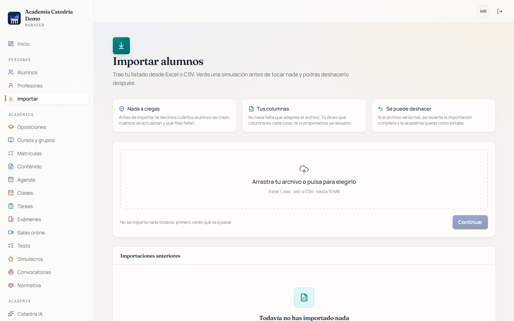
El que tengáis. Con las columnas que tengáis y en el orden que tengáis.
Reconoce nombre, apellidos, DNI, teléfono, correo y fecha de alta. Si se equivoca, lo corregís vosotros con un desplegable.
Os dice exactamente: «se crearán 4, se actualizará 1, hay 2 con errores», y cuáles son los dos que fallan y por qué. En este momento todavía no se ha escrito nada en la base de datos.
Un botón. Vuelve todo al estado anterior, incluidas las matrículas que se hubieran creado.
Podéis probar sin miedo. Si el archivo venía mal, se deshace y la academia queda como estaba.
Lo mismo sirve para el banco de preguntas. Si tenéis veinte años de tests en hojas de cálculo, se importan igual: se avisa de las repetidas —que en un banco viejo son muchas— y entran en borrador para que las reviséis antes de que las vea nadie.
La migración va incluida. No es un servicio aparte que se cobra: si vuestros datos vienen de un programa raro, los preparamos nosotros. Es el único momento difícil de cambiar de sistema y no nos parece razonable cobrarlo.
El contenido
Cada academia organiza el material a su manera y le pone los nombres que usa en clase. Un programa que imponga su estructura obliga a trabajar de una forma que no es la vuestra.
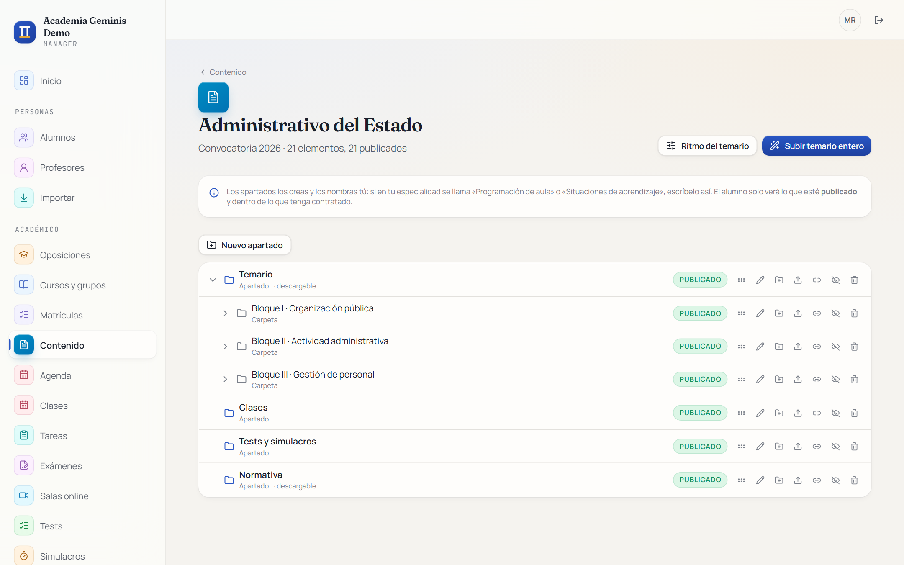
En la demo hay apartados llamados «Programación de aula» y «Situaciones de aprendizaje». No los hemos puesto nosotros: los escribe la academia. Hasta hace poco se llamaban de otra forma y volverán a cambiar. Si esos nombres estuvieran dentro del programa tendríais que esperar a que los actualizáramos.
Hay un asistente al que se le suelta la carpeta con los cincuenta PDF del temario. Lee los nombres de los archivos, propone el árbol y os lo enseña para que lo corrijáis antes de crear nada.
Con honestidad, sobre la descarga. Ninguna web del mundo impide una captura de pantalla, y quien os diga lo contrario os está engañando. Lo que se consigue con la lectura en pantalla y la marca de agua es que compartir el material cueste trabajo y deje rastro de quién lo hizo.
Lo que más se usa
Subís el temario entero el primer día. Pero el alumnado solo ve por dónde va la clase.
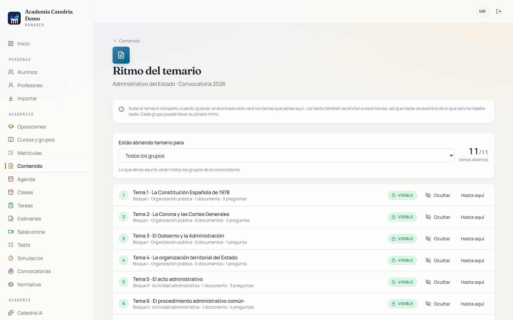
Se pulsa «Hasta aquí» en el tema por el que va la clase y el alumnado ve hasta ahí. Cuando avanzáis, abrís el siguiente. Si el grupo de mañana va más adelantado que el de tarde, cada grupo ve el suyo: el mismo material, sin duplicar cursos ni mantener dos copias.
Y si un alumno se sabe la dirección de un tema todavía cerrado y la escribe a mano en el navegador, no existe para él. No está escondido: no está.
Esa distinción importa más de lo que parece. Muchos programas ocultan el enlace en el menú pero sirven el archivo a quien lo pida. Aquí la comprobación está en el servidor, en el mismo punto por el que pasa todo lo demás, y hay pruebas automáticas que lo verifican en cada cambio del programa.
Un alumno con tres temas abiertos solo puede examinarse de esos tres. No aparecen las preguntas de los que todavía no habéis dado, ni siquiera en el test aleatorio.
Los packs los inventáis vosotros
Curso completo, solo temario, solo tests, temario más clases presenciales. Cada academia vende como quiere, y el programa no os obliga a vender de una forma concreta.
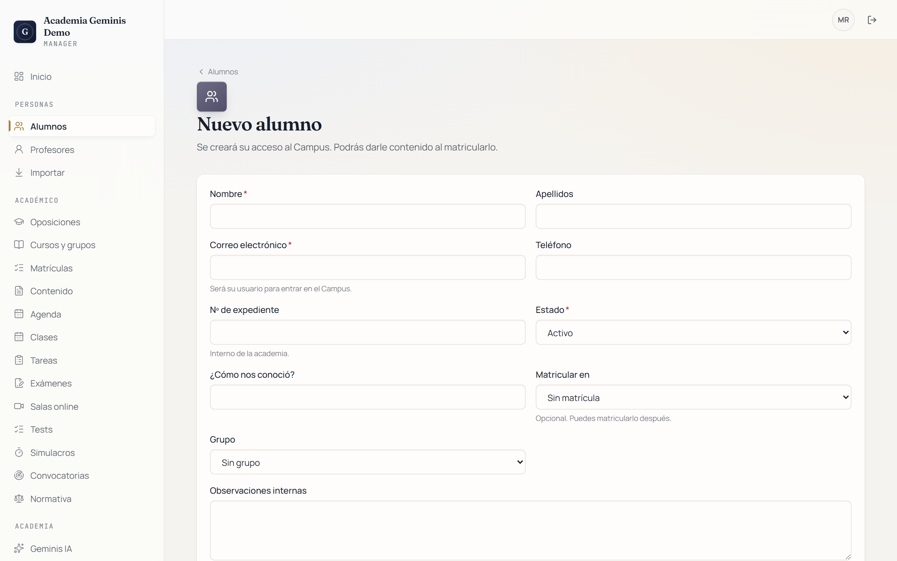
Desde la ficha se le da o se le quita acceso a una parte concreta sin tocar su matrícula. Sirve para el alumno que amplía a mitad de curso, para el que se descuelga de una parte, y para el que os pide probar una semana.
Un alumno que ha comprado solo el pack de tests no ve el temario: ni la sección en el menú, ni los PDF, ni el buscador se lo devuelve. Y —esto es lo que casi nadie comprueba— tampoco lo consigue preguntándole a la inteligencia artificial. Es la misma barrera, no una segunda barrera puesta después.
Comprobado, no prometido. Hay una prueba automática que coge un alumno con acceso restringido, le hace preguntas sobre el material que no ha pagado y verifica que recupera cero fragmentos. Se ejecuta sobre los 32 apartados del temario de la demo, uno por uno, en cada cambio del programa.
Evaluación
El tipo test se corrige solo. El supuesto y el desarrollo los corrige una persona, porque no hay otra manera de hacerlo bien.
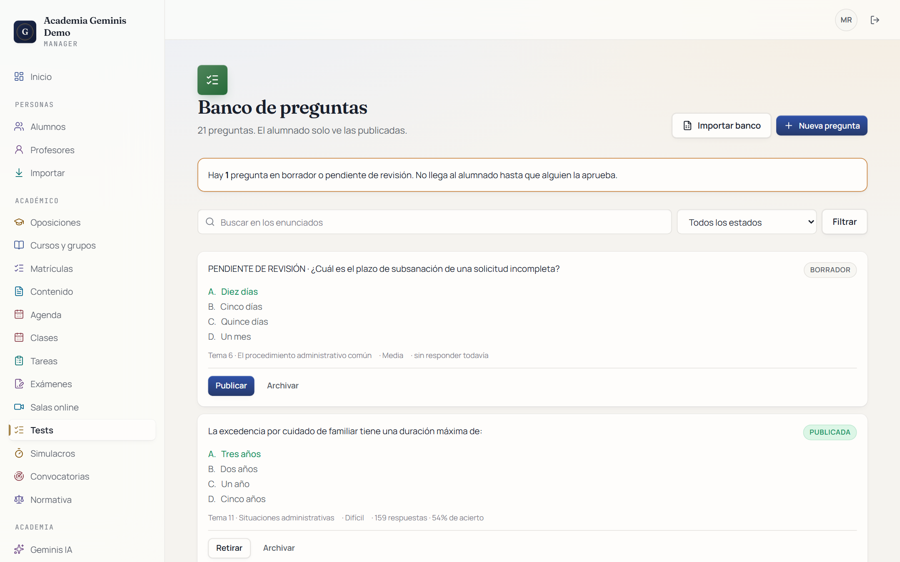
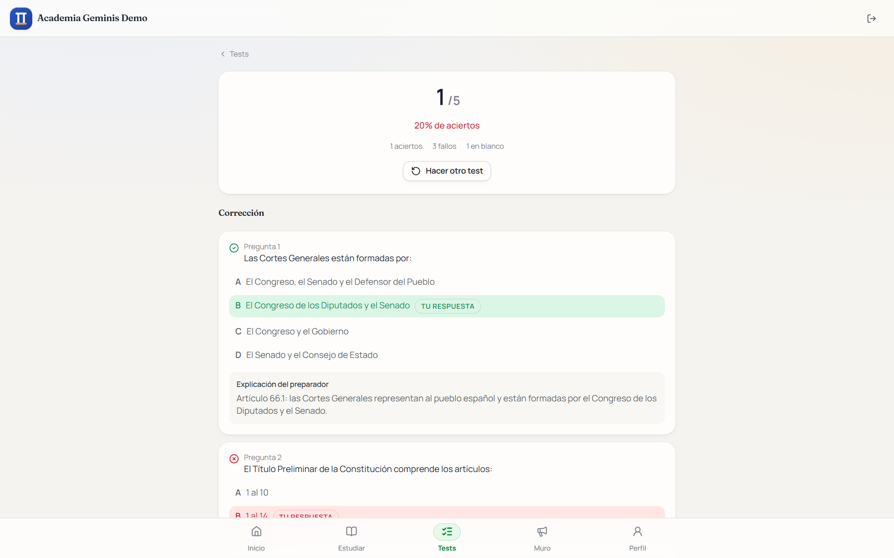
El otro lado
Se instala desde el navegador, se añade a la pantalla de inicio del teléfono y se abre como una aplicación. Sin pasar por ninguna tienda de apps, sin esperar aprobaciones y sin pagar comisión a nadie.
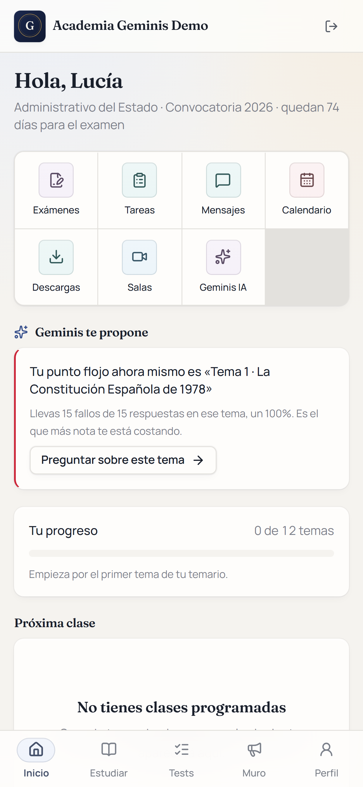
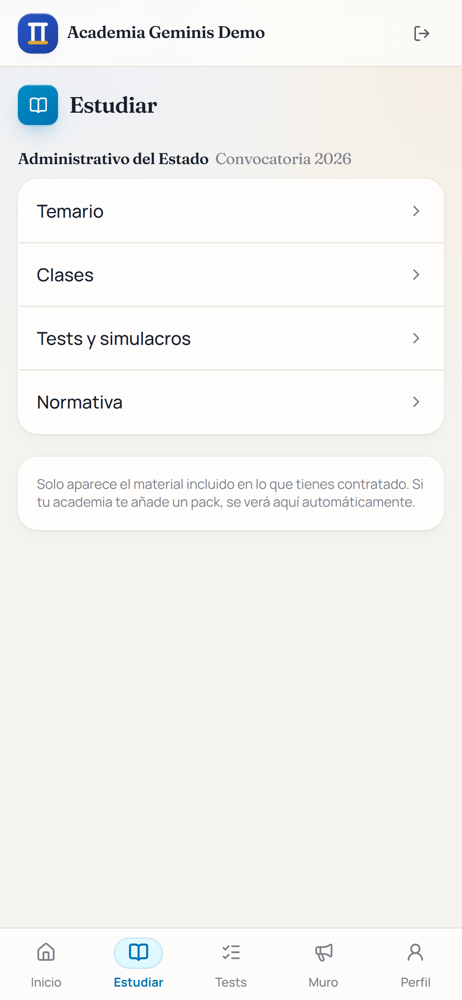
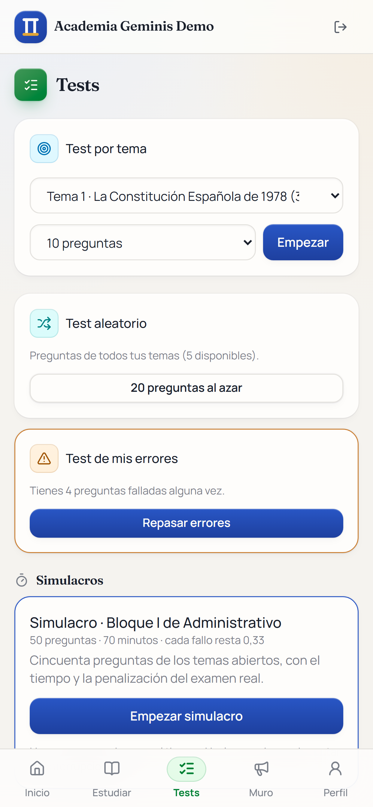
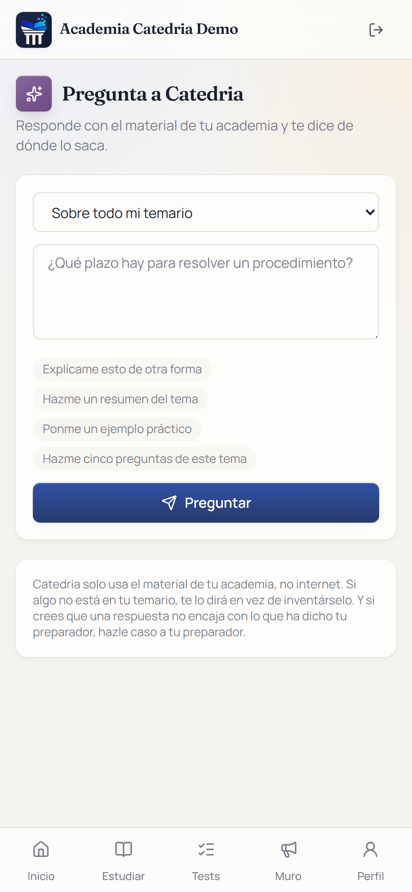
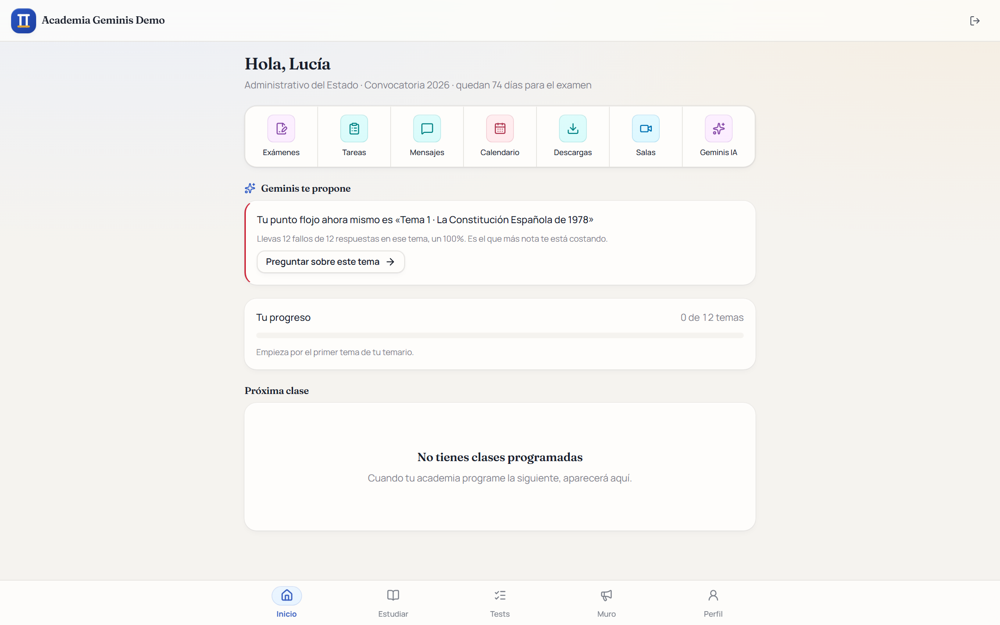
Funciona sin cobertura. Los temas descargados se leen en el metro. Es una hora de estudio ganada al día en vez de perdida.
Inteligencia artificial
El problema de poner un chatbot en una academia no es que no sepa: es que sabe demasiado, y lo que sabe no es lo que vosotros enseñáis.
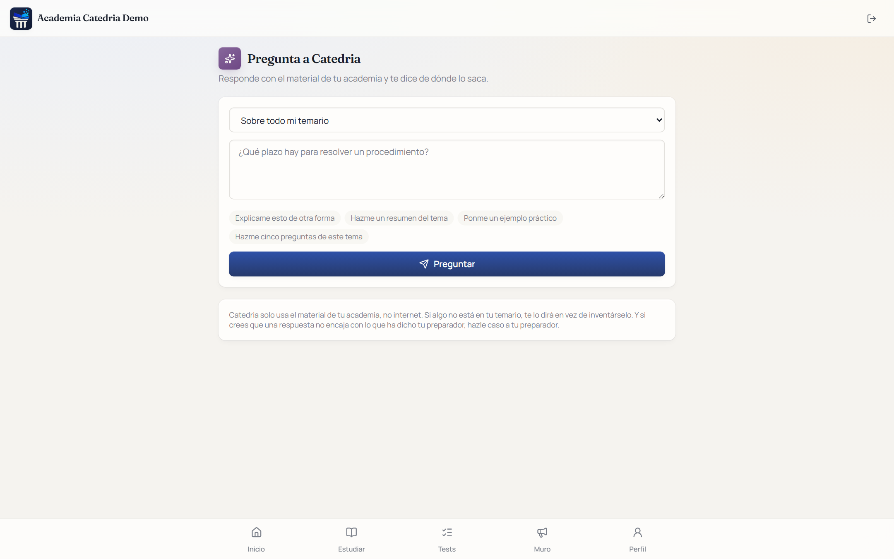
Geminis IA solo lee vuestro material. No busca en internet, no completa con lo que recuerda y no mezcla la ley de otra comunidad autónoma. Y cita siempre de dónde sale cada dato, para que el alumno pueda ir al tema y comprobarlo.
Si no encuentra la respuesta en vuestro temario, lo dice. Preferimos un «no lo sé» a una respuesta inventada que luego tenéis que desmentir en clase.
Y cuando la IA genera preguntas para vosotros, entran siempre como borrador. Nunca publica nada. La última palabra es del preparador, siempre.
Geminis lleva su propio motor dentro del servidor. No hay que contratar ninguna API ni pagar por consulta, y con esa configuración vuestro temario no sale del servidor: no se envía a ninguna empresa de fuera.
Si algún día queréis respuestas más redactadas, se conecta un modelo externo y la barrera de permisos es exactamente la misma. En ese caso el consumo se mide por academia, por persona y por funcionalidad, y lo veis en euros.
Inteligencia artificial
Responder preguntas lo hace cualquiera. Lo que separa a Geminis de un buscador es que sabe cómo va cada alumno.
En la portada del Campus, cada mañana, una propuesta concreta. Y nunca sin el motivo delante: no dice «estudia el tema 4», dice «llevas doce fallos de veinte en el tema 4».
Una recomendación sin el dato delante no la sigue nadie.
En la corrección de un test, en cada pregunta fallada, hay un botón. El momento en que más se aprende es justo después de equivocarse, y es justo cuando no tenéis a nadie delante para explicárselo. Ahí le da la explicación del preparador y la refuerza con lo que dice vuestro temario, citando la página.
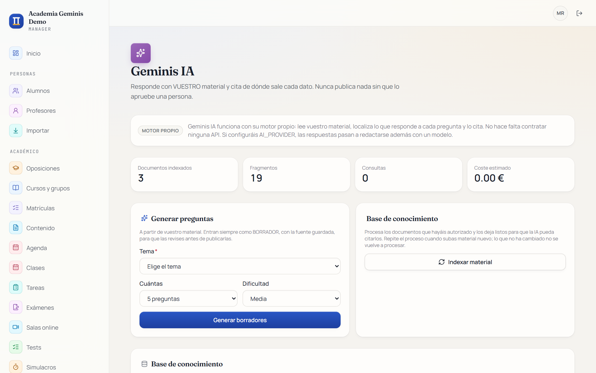
Todo entra como propuesta. Nada se publica sin que alguien de la academia lo haya leído y aceptado.
Lo que ahorra dinero
Un alumno no se da de baja de golpe. Deja de entrar, deja de hacer tests, falta dos veces, y un mes después pide la baja. Para entonces ya no hay nada que hacer.
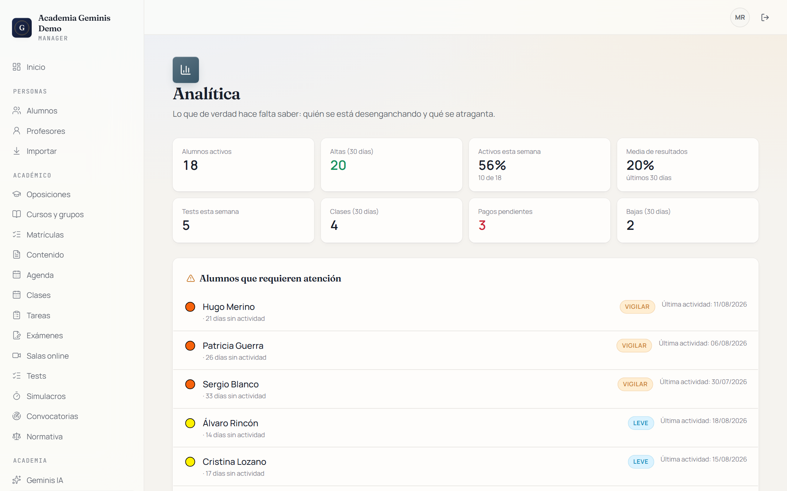
No es un algoritmo que no podáis discutir. Os dice exactamente por qué sale cada persona: días sin entrar, tests sin hacer, material sin abrir, faltas a clase, resultados que bajan. Vosotros decidís a quién llamáis y qué le decís.
Un solo alumno que no se da de baja paga el programa entero. Si con esto recuperáis uno al mes, ya está amortizado.
Mientras dormís
Nos decís qué oposiciones preparáis. El servidor mira el Boletín todas las mañanas. Vosotros no tenéis que abrir nada.
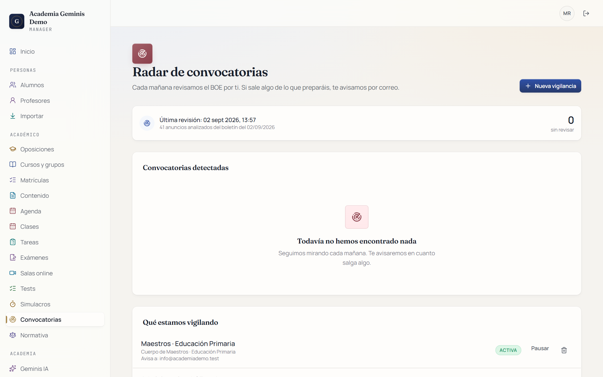
Si sale algo de lo vuestro, os llega un correo. Y con un clic en «Aceptar y crear» tenéis la convocatoria dada de alta, con sus apartados, lista para subir el temario.
Podéis convocar a vuestros alumnos el mismo día que sale la convocatoria, no tres días después cuando ya lo han visto en otro sitio.
En una academia de oposiciones esto no es una comodidad. El día que sale una convocatoria grande es el día que más matrículas se firman en todo el año, y llegar el primero cambia la cifra.
El temario que se queda viejo
Cambia un artículo y, de repente, no sabéis cuántos temas y cuántas preguntas de vuestro banco han quedado mal. Normalmente se descubre porque un alumno lo dice en clase.
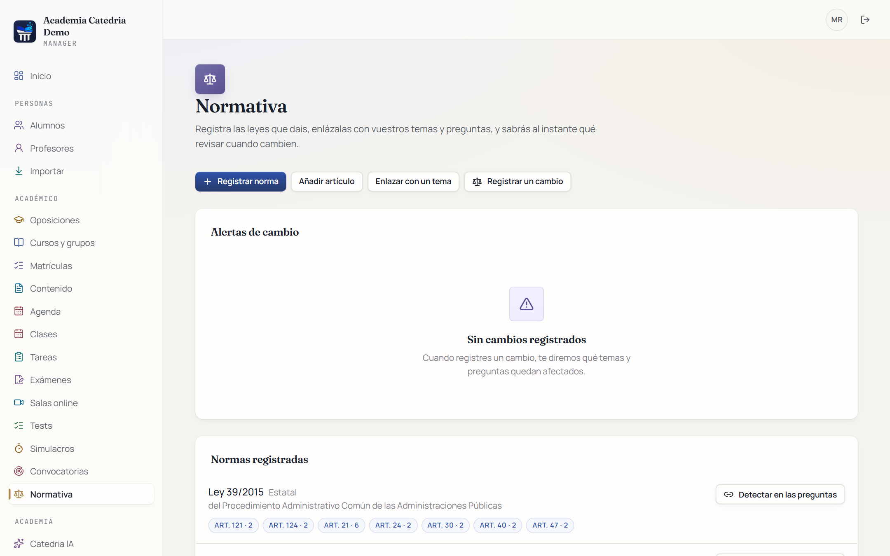
Cuando registráis que un artículo ha cambiado, el sistema os dice qué temas y qué preguntas dependen de él y los marca para que los reviséis.
No toca vuestro contenido. Marca, avisa y lista. La decisión de qué se reescribe y cómo es vuestra, siempre. Un programa que corrigiera el temario por su cuenta sería mucho peor que uno que no avisa.
Es de las cosas que menos se enseñan en una demostración y más agradecen las academias al cabo de un año, cuando llega la primera reforma.
El dinero
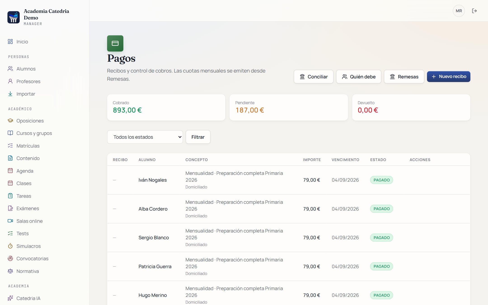
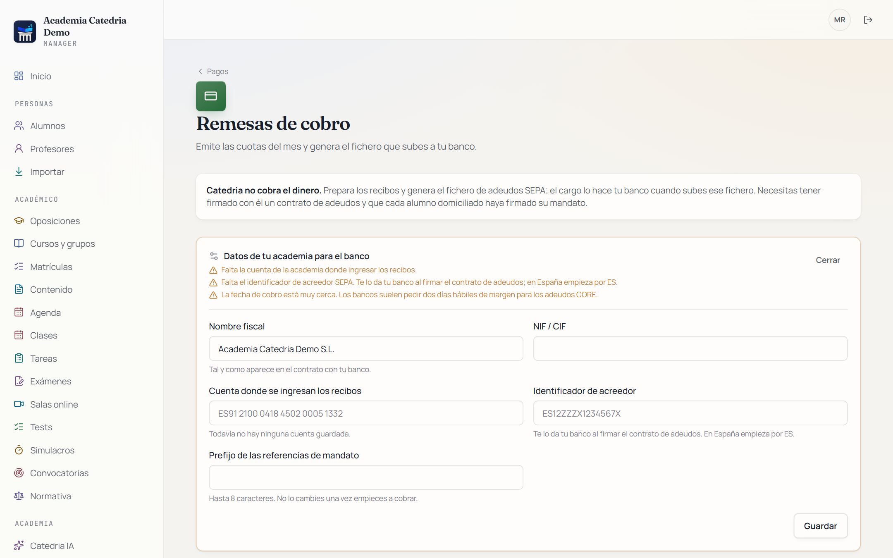
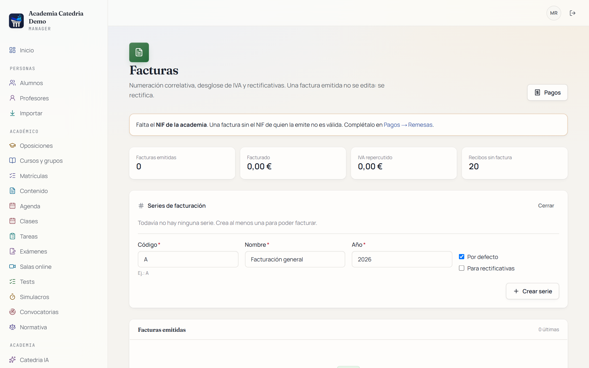
IVA por línea, exención del artículo 20.Uno.9º para la enseñanza, rectificativas y exportación para la gestoría.
El IBAN va cifrado. Se guarda cifrado en la base de datos y nunca se envía entero al navegador: en pantalla se ven los últimos cuatro dígitos. Tampoco queda escrito en el registro de auditoría.
El día a día
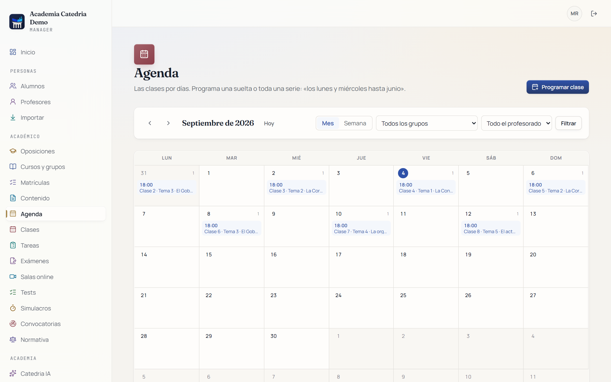
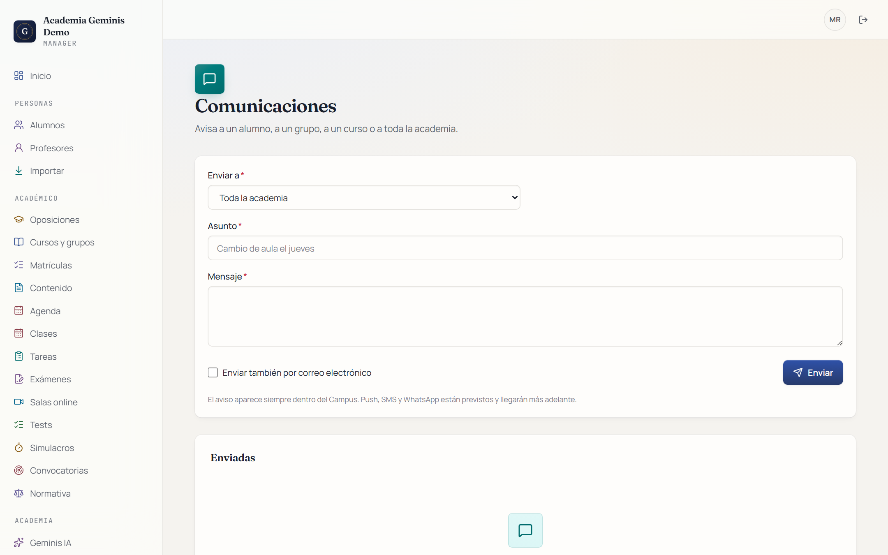
Que la conversación con el alumnado esté dentro del sistema no es solo comodidad: es que cuando un preparador se va, la conversación se queda en la academia.
La pregunta incómoda
Es la pregunta que más nos hacen y la que más en serio nos tomamos. La respuesta corta: no puede. La larga merece esta página.
Geminis guarda a todas las academias en la misma base de datos, como casi todo el software de este tipo. La diferencia está en cómo se separan. No es que el temario de otra academia esté oculto: es que la base de datos no lo devuelve. La separación está en el motor de la base de datos, por debajo del programa, de modo que un fallo de programación no puede saltársela.
En septiembre de 2026 el sistema pasó una auditoría de seguridad completa: se buscaron fallos reales, se corrigieron y se añadió una prueba por cada uno para que no puedan volver. El informe está a disposición de cualquier academia que lo pida, con lo que funciona y con lo que queda pendiente. Un informe que solo dijera cosas buenas no valdría nada.
Y si algún día queréis iros, os lleváis todos vuestros datos en un clic. Un programa del que no se puede salir no merece confianza.
Sin rodeos
Importar el alumnado: minutos. Subir el temario: lo que tardéis en arrastrarlo. Podéis empezar con una oposición y crecer.
No. Lo habitual es empezar por la gestión y el cobro, y añadir el campus cuando el temario esté subido. Los módulos se contratan cuando hacen falta.
El profesor solo necesita tres cosas: abrir temas según avanza, poner las notas y escribir en el muro. Hay un manual dentro del propio programa, y formación incluida en la puesta en marcha.
Si no encuentra la respuesta en vuestro material, lo dice. Y no puede publicar nada por su cuenta: todo lo que genera entra como borrador.
Sí, rama por rama, con marca de agua opcional. Y con la honestidad de la página 5: nadie impide una captura de pantalla.
El sistema os dice qué temas y qué preguntas dependen del artículo que ha cambiado y los marca para revisión. No toca vuestro contenido.
Se importan, se avisa de las repetidas, se simula antes de tocar nada y entran en borrador para que las reviséis.
No. Ni permanencia ni coste de alta. Si el programa no os sirve, lo dejáis y os lleváis vuestros datos.
En servidores en la Unión Europea, con copias de seguridad diarias. Contrato de encargado del tratamiento incluido, como exige el RGPD.
Tarifa
Una academia no compra «Geminis»: compra las partes que necesita.
| Módulo | Al mes |
|---|---|
| Núcleo Alumnado, matrículas, oposiciones, cursos y grupos, profesorado y permisos, importación, auditoría y copias. Es la base y no se puede quitar. | 49 € |
| Temario Árbol de contenido, asistente de subida, ritmo del temario, descarga y marca de agua, versiones. | 39 € |
| Tests y simulacros Banco de preguntas, importación con detección de repetidas, simulacros con reloj y penalización, repaso programado. | 39 € |
| Tareas y exámenes de desarrollo Supuestos y trabajos con plazo, exámenes escritos con reloj, corrección con nota y comentario. | 29 € |
| Agenda y clases Calendario, clases, asistencia con cinco estados, salas online permanentes. | 24 € |
| Cobros Recibos, cargo mensual en cuenta con el IBAN cifrado, remesas SEPA, suspensión por impago. | 34 € |
| Facturación Numeración correlativa, IVA por línea, exención del 20.Uno.9º, rectificativas, exportación para la gestoría. Necesita Cobros. | 24 € |
| Comunicación Muro de clase, mensajes uno a uno, envíos a grupos, avisos automáticos. | 19 € |
| App del alumnado La aplicación instalable, estudio sin cobertura, tests y exámenes, calendario, muro, límite de dispositivos. | 49 € |
| Geminis IA Respuestas con vuestro material y citas, «¿por qué he fallado?», copiloto del preparador, plan diario. Sin contratar ninguna API. Necesita Temario. | 49 € |
| Analítica Riesgo de abandono con su motivo, rendimiento por tema y grupo, preguntas más falladas. | 19 € |
| Normativa y radar del BOE Normas enlazadas con los temas, aviso de cambio legislativo, radar de convocatorias. | 19 € |
| Los doce módulos | 393 € |
Precios sin IVA, por academia y mes. Sobre esta suma se aplican el descuento por volumen y el tramo de tamaño de las dos páginas siguientes: 393 € es lo que suman los doce, no lo que se acaba pagando por ellos.
Tarifa
Nadie quiere configurar doce módulos el primer día. Estos tres cubren casi todas las academias, y a partir de ahí se ajusta.
No es generosidad. Una academia que lleva ocho módulos con nosotros da menos trabajo que ocho academias con uno, y sobre todo se queda. El descuento se aplica solo, sin pedirlo:
| Módulos contratados | Descuento |
|---|---|
| De 1 a 4 | — |
| 5 o más | −10 % |
| 7 o más | −15 % |
| 10 o más | −20 % |
Los precios de esta página son para una academia de 51 a 150 alumnos activos. Por debajo se paga menos y por encima más; la tabla completa está en la página siguiente.
Tarifa
No nos parece razonable cobrarle lo mismo a una academia de treinta personas que a una de quinientas. Usan el mismo programa de forma muy distinta.
| Alumnado activo | Esencial | Online | Completo |
|---|---|---|---|
| Hasta 50 | 76 € | 124 € | 189 € |
| De 51 a 150 | 126 € | 206 € | 314 € |
| De 151 a 350 | 189 € | 309 € | 472 € |
| De 351 a 700 | 265 € | 433 € | 660 € |
| Más de 700 | a convenir | ||
Fijaos en lo que pasa con el coste por alumno del pack Completo: en una academia de 150 son 2,09 € al mes por persona; en una de 700, 0,94 €. Cuanto más crecéis, menos os cuesta cada alumno.
«Alumnado activo» es el que tiene matrícula viva ese mes. El que se dio de baja en marzo no se paga en abril. No se cuentan las fichas guardadas de años anteriores, que si no todo el mundo acabaría pagando por su histórico.
Y el tramo se recalcula solo, hacia arriba y hacia abajo. Si tenéis un año flojo, pagáis menos sin tener que llamar a renegociar nada.
Tarifa
| Pago anual Se pagan diez meses en lugar de doce. | −17 % |
| Primeras academias Para las diez primeras, a cambio de poder contar que trabajáis con nosotros. | −50 % el primer año |
Una academia de 150 alumnos que cobre 100 € al mes factura 15.000 € al mes. El pack Completo son 314 €: un 2,1 % de lo que ingresa, o 2,09 € por alumno y mes.
Dicho de otra manera: si la Analítica os avisa a tiempo de un solo alumno que iba a dejarlo, y lo recuperáis, el programa ya se ha pagado ese mes.
Sobre la IA. Los 49 € del módulo son todo lo que cuesta: el motor va dentro y no se paga por consulta. Si preferís conectar un modelo externo más potente, ese consumo se factura aparte y a precio de coste, y lo veis desglosado en euros por persona y por funcionalidad.
Veinte minutos, dos pantallas: la vuestra y la de vuestro alumno. Todo lo que se toca en una aparece en la otra. Sin diapositivas.
Y si preferís probarlo vosotros, os montamos una academia de prueba con vuestro propio temario, sin compromiso y sin pedir datos de pago.